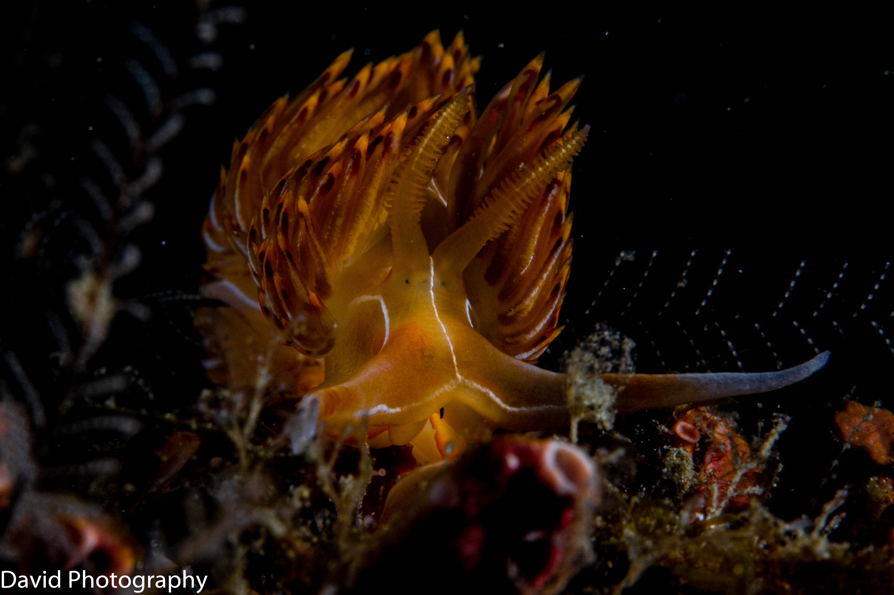

5 m
El rojo se va primero
Pocos metros bajo la superficie el agua ya se ha comido los rojos y los naranjas. Por eso una misma escena parece otra con luz de apoyo, y por eso me obsesiona el color.

Fotografío lo que veo caminando y lo que veo flotando. Esta página es mi cuaderno de ambas cosas, y crece cada vez que subo una foto nueva.
Cosas que me han enseñado la cámara y el agua, apuntadas según bajo.
Pocos metros bajo la superficie el agua ya se ha comido los rojos y los naranjas. Por eso una misma escena parece otra con luz de apoyo, y por eso me obsesiona el color.
Sin buena flotabilidad no hay foto nítida ni arrecife intacto. Aquí la técnica fotográfica empieza por controlar el propio cuerpo.
Fuera del agua mi trabajo es casi el contrario: quedarme quieto y dejar que la luz llegue donde yo quiero.
Soy aficionado a la fotografía, la de tierra y la subacuática. No vivo de ello ni quiero: es mi manera de mirar con calma.
Escribe aquí dos o tres líneas tuyas: cuándo empezaste a bucear, qué cámara usas, qué te gustaría fotografiar algún día.